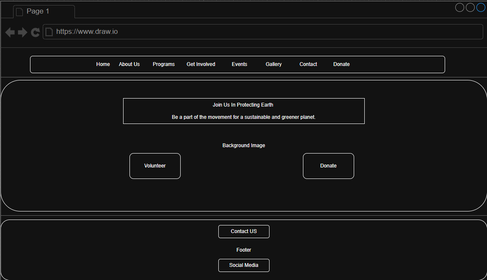
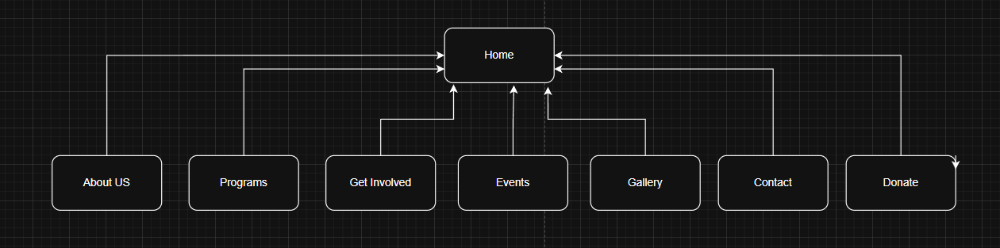

Project Overview
This application will be a website for a clients business. The client is starting a nonprofit foundation to help the Environment. The client has always cared about the environment and wants to bring awareness to it. He will use the website as a hub to have show people how and where to help.
The intended user for this website are people around the world who want to help our Environment and be a part of something bigger than ourselves.
This website will have a Home, About Us, Programs, Get Involved, Events, Gallery, Contact and Donate page
Client Information
- Project Title: GreenEarth Foundation
- Developed by: Christian Blanck
- Contact Email: [Private]
- Phone: [Private]
Wireframe
The wireframe for the home page of the client's website
Site Map
The site map for the client's website
Page Design
Home Page
- Acts as the landing page and main navigation hub.
- All users
- This will contain have a mission statement about the foundation a background image and buttons for people that want to volunteer or donate. It will also contain links to social media pages
- User will not input any data in this page
- No data field validations
- The page will contain the navigation buttons, then another two buttons and three hyperlinks
- First there will be the navigation buttons which will take you to the designated page. Second the volunteer button will take you to the Get Involved Page and the Donate Button will take you to the donate page. Lastly there will be three hyperlinks taking you to the designated social media website: Instagram, Facebook and Twitter.
About Us Page
- Explain to people a little bit about the foundation and their mission.
- All users.
- The page will have a description about the Foundation and what they are trying to accomplish. It will also have their mission statement.
- User will not input any data in this page
- No data field validations
- The page will contain the navigation buttons, and three footer hyperlinks
- First there will be the navigation buttons which will take you to the designated page. Lastly there will be three hyperlinks taking you to the designated social media website: Instagram, Facebook and Twitter.
Programs Page
- Demonstrates the programs/projects my the foundation is currently working on.
- All users.
- The page will have a couple of the programs that the foundation is currently doing. Like Community Clean-ups and Tree Planting projects.
- User will not input any data in this page
- No data field validations
- The page will contain the navigation buttons, and three footer hyperlinks
- First there will be the navigation buttons which will take you to the designated page. Lastly there will be three hyperlinks taking you to the designated social media website: Instagram, Facebook and Twitter.
Get Involved Page
- Tell people how they can get involved and what they can do to help. It will also have a volunteer sign up.
- All users.
- The page will have examples on how people can get involved. With volunteering, donations or simply by spreading awareness. The page will also have a button where users can sign up to volunteer.
- The user will input their name and email for volunteering purposes.
- Both data fields require validation. They can't be empty and the email data field must meet email requirements.
- The page will contain the navigation buttons, the sign up button, and three footer hyperlinks.
- First there will be the navigation buttons which will take you to the designated page. Second there will be the two data fieds where the user enters information which will have to check if the inputed information is not empty and is valid. Third there will be the Sign Up button which will register the users information so they can become a volunteer. After the button is clicked it will clear the data fields and display a message sayign Thank You for signing up. Lastly there will be three hyperlinks taking you to the designated social media website: Instagram, Facebook and Twitter.
Events Page
- Displays some of the Upcoming Events the Foundation has.
- All users.
- The page will show a couple of the upcoming events that the foundation is being a part of.
- User will not input any data in this page
- No data field validations
- The page will contain the navigation buttons, and three footer hyperlinks
- First there will be the navigation buttons which will take you to the designated page. Lastly there will be three hyperlinks taking you to the designated social media website: Instagram, Facebook and Twitter.
Gallery Page
- Displays some of the things that the foundation has done.
- All users.
- The page will display three photos, two to show things the foundation has done like tree planting and community clean up. It will also have a photo to show that helping the environment is good.
- User will not input any data in this page
- No data field validations
- The page will contain the navigation buttons, and three footer hyperlinks
- First there will be the navigation buttons which will take you to the designated page. Lastly there will be three hyperlinks taking you to the designated social media website: Instagram, Facebook and Twitter.
Contact Page
- A page where users can send a message to the foundation.
- All users.
- The page will have data fields where user can input their information and a message they want to send to the foundation.
- User will input their name, email, and a message they want to send.
- All three fields require data validation. To make sure they are not empty and the email data field must meet email requirements.
- The page will contain the navigation buttons, three data fields, a send message button, and three footer hyperlinks
- First there will be the navigation buttons which will take you to the designated page. Second there will be the three data fieds where the user enters information which will have to check if the inputed information is not empty and is valid. Third there will be the Send Message Button which will register the user information and send the message to the foundation. After the button is clicked it will clear the data fields. Lastly there will be three hyperlinks taking you to the designated social media website: Instagram, Facebook and Twitter.
Donate Page
- A page where users can donate to help and support the cause of the foundation.
- All users
- The page will contain buttons where users can choose how much they want to donate from predetermined amounts or they can input a custom amount. It will also have a dropdown where users can selected their payment method and it will also contain the donate button.
- User will input the amount they want to donate.
- The amount data field will require validation to make sure it is not empty when the donate buton is clicked.
- The page will contain the navigation buttons, four predetermined donation amount buttons, one custom amount data field, one dropdown for payment method, one donate button, and three hyperlinks.
- First there will be the navigation buttons which will take you to the designated page. Second the volunteer button will take you to the Get Involved Page and the Donate Button will take you to the donate page. Lastly there will be three hyperlinks taking you to the designated social media website: Instagram, Facebook and Twitter.
Dynamic Functionality of the Website
I will have to use JavaScript for three of my pages. It will be needed to for the data fields and the buttons to make sure they work as intended and do what I want them to do. I will use it in the Get Involved page so after the user inputs their information and clicks submit a pop up will show saying thank you for volunterring and will remove the sign up button from the screen since the user is already signed up. I will also use JavaScript in the Contact Us page to make sure the user cant send message if the data fields are blank and after submitting the message it will clear the data fields to allow the user to send another message if they want. Lastly I use JavaScript in the donate page where if the user click one of the predetermined amounts it will appear in the data field below, I will also use it in the donate button where after its clicked it will display a message saying thank you for donating. All of this is being done to help my client succeed in his mission and to allow people to help their community.